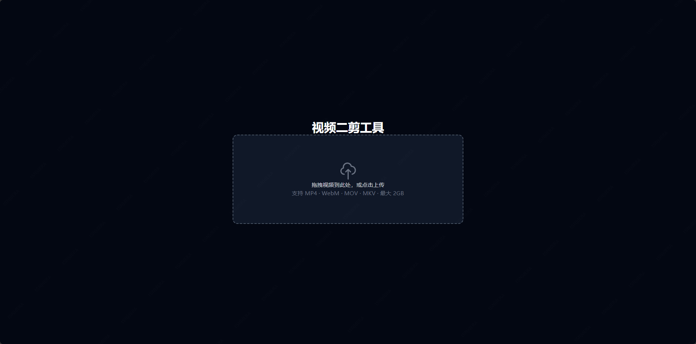
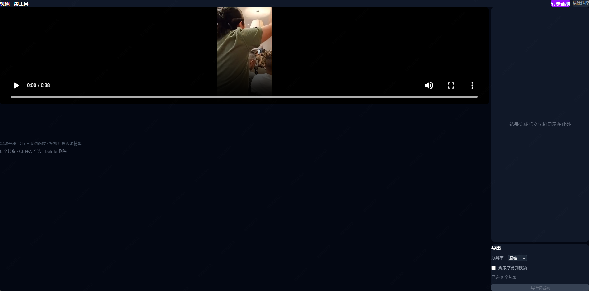
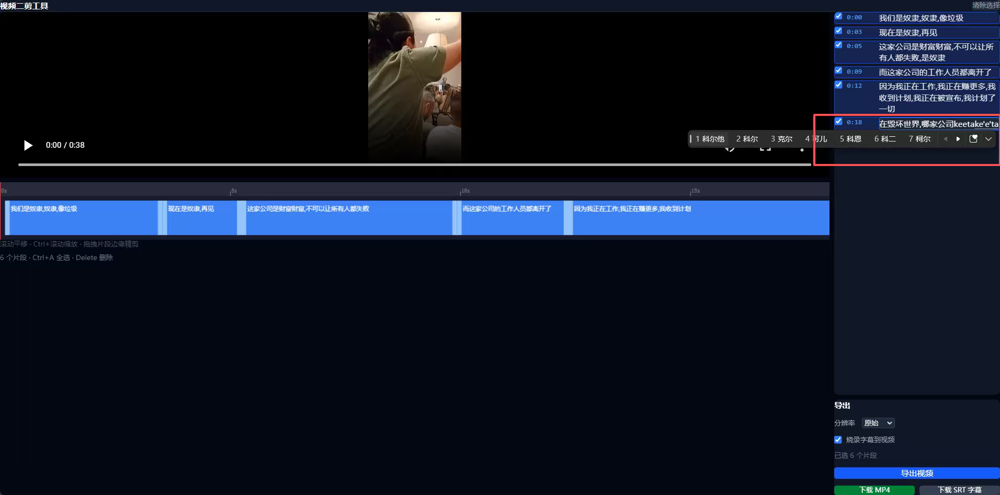
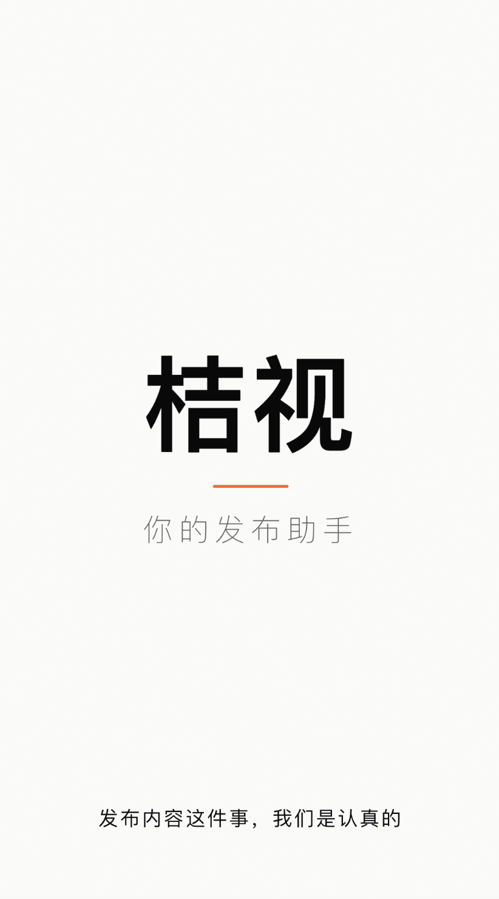

李天元
00后内容创作者
创意脑洞 + 高效执行 + 情感洞察
我能做的事
短视频选题、脚本、拍摄、剪辑和上线全流程执行。
结合平台语境做内容运营，并根据数据反馈快速调整。
有 AI 相关内容经验，也在自己动手做一些小工具和内容实验；做过爆款内容，对抖音、小红书的平台语境比较敏感，也比较熟悉年轻用户的表达方式，想继续往 AI 方向多学一点。


>> 工作经历 / Experience
滴滴出行
公众沟通部 | 新媒体运营
结合业务方向及受众特点，融入当下节气、热点话题等开展视频内容创意工作，完成系列视频的制作，所策划的“滴字经”、“很新的爬山方式”等00后系列内容在视频号上数据均实现10w+。
调研小红书平台的用户特点、互动方式及内容玩法，结合内容策略制作符合滴滴小红书官方账号及平台调性的内容，产出的内容带动涨粉2000+、互动量1w+，并着重体现官号的“活人感”调性。
针对司机群体，负责“开始接单啦”视频号、抖音号的内容策划，解决具体业务难题，实现司乘友好互动提升，规避舆论影响，促进新功能上线快速推广等。独立完成拍摄、剪辑，把控视频展示风格及内容输出质量，收集评论区反馈，迭代选题方向更新选题库。爆款视频：女儿的信是她接的第一单（2w+）、女司机有话说（1w+）、司机新年家宴（1w+）。
根据传播策略，统筹活动策划及落地、达人对接、素材内容拍摄及制作等工作，促进品牌的正向宣传。结合项目要求，协调三方达人、媒体渠道等资源。其中2024年潍坊风筝节三方传播总播放量1472w+，累计点赞12w+。以“会飞的小猪”风筝为载体，实现品牌年轻化传播，低成本高曝光，提升品牌认知度。
直播运营：
从流程总控、内容策划、直播话术等跨部门沟通协调，独立完成直播的全链路管理。
>> 实习经历 / Internship
滴滴出行
新媒体运营
滴滴出行官方视频号“00后”系列视频策划、热点捕捉与自家产品结合，在潍坊风筝节策划“花小猪”风筝制作视频。
网易传媒科技(北京)有限公司
视频制作
视频脚本、拍摄、口播、剪辑及播后数据分析、维护等工作。擅长数码类产品测评、热点数码产品预测的视频输出。
央视国际网络有限公司
内容运营
筛选、编辑时事体育热点新闻，严选高价值新闻、第一时间按照平台要求规范发布。
>> 内容产出 / Content Works
>> Vibecoding / 最近做的两个小工具
最近我一直在边学边用 AI。比起急着做出多厉害的东西，我更想保持一点好奇心，去试不同的 AI 工具，看看它们能不能慢慢帮我把真实工作里的小麻烦处理得顺一点。
视频二剪小工具
第一个工具很像我给自己做的“省一点事按钮”：把视频先转译成中文，再把字幕烧录回原视频画面里，也能顺手改时长、文字和一些基础信息。流程上主要用了 FFmpeg 做音视频处理、Faster-Whisper 做语音转录，再把字幕以 SRT / ASS 的方式合成回视频里，也会调用本地 GPU 去加快处理。



内容审核助手
第二个工具是给“发出去之前总想再检查一下”的自己做的。核心交互很简单：每一步流程都要长按确认，再接入 API Key，调用大模型能力，结合审核用的 .md 文档去检查内容，最后再决定发布。

>> 生活照片/胶片作品 / Photography
（支持鼠标拖拽或点击左右两侧翻页）
Selected Film Works
Clumsy Moments
生活切片 / 胶片作品


- END -
Shot on Film
BEIJING · 2024